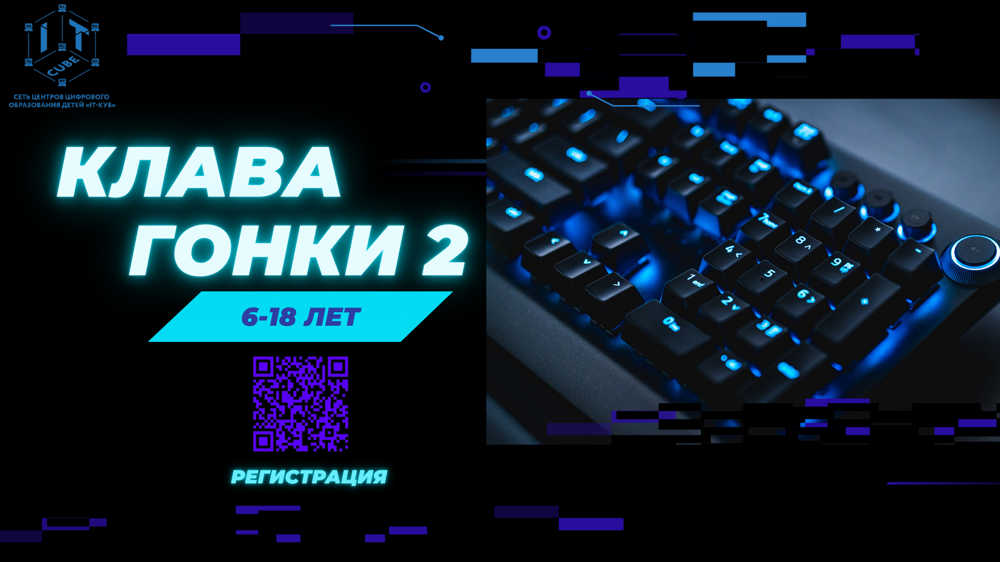

Объявляем старт мероприятию "Клавагонки - 2".
20.01.2026

Добрый день! Объявляем старт мероприятию "Клавагонки - 2".
ПС 21 по 27 января в рамках занятий в соответствии с расписанием занятий в IT-кубе проводится диагностика по скорости и точности печати. В мероприятии принимают участие ВСЕ обучающиеся нашего Центра. В рамках турнира будут определены победители и призеры.
Что такое "Клавагонки"?
Это увлекательное соревнование по скоростной печати на клавиатуре, где каждый сможет продемонстрировать свои навыки и побороться за звание мастера клавиатурного искусства!
Категории участников:
Обязательным условием является регистрация каждого участника по ссылке: new-portal.ris61edu.ru/activity/31 * На сайте "навигатор доп. образования РО" регистрацию проводит родитель участника! Не упустите шанс побороться за звание лучшего клавагонщика и провести время с удовольствием. Есть вопросы? Пишите нам по адресу it-cube61@it-cube61.ru С уважением, команда IT-Куба..